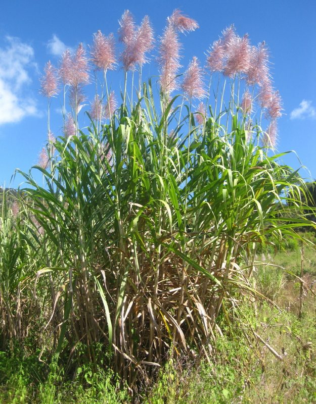

गन्नाSugarcane
Saccharum officinarum · Poaceae · FLR-0034

- Scientific name
- Saccharum officinarum L.
- Family
- Poaceae
- Hindi
- गन्ना
- Status here
- cultivated
- IUCN
- not evaluated
When to look कब देखें
Present all year.
गन्ना / Sugarcane
Saccharum officinarum L. — Poaceae
गन्ना — पूर्वी उत्तर प्रदेश का सबसे महत्वपूर्ण व्यावसायिक नकद फसल (cash crop), जो इस क्षेत्र की कृषि-अर्थव्यवस्था का मुख्य आधार है। यह एक विशाल, बहुवर्षीय घास है जिसके तने (डंठल) मोटे, रेशेदार और गांठदार होते हैं और मीठे मीठे रस से भरे होते हैं। इसकी लंबी, संकरी और आरी जैसी तेज किनारों वाली पत्तियां खेतों में सघन दीवार जैसी खड़ी होती हैं। सर्दियों में तनों से निकलने वाले चांदी जैसे चमकीले फूलों के गुच्छे इसके पकने का संकेत होते हैं। गन्ने से स्थानीय कोल्हू और चीनी मिलों में चीनी, गुड़ और शीरा बनाया जाता है।
Quick Identification त्वरित पहचान
| Feature | Description |
|---|---|
| Stems | Tall, stout, unbranched fibrous culms (2–6 m high, 2–5 cm thick); divided into distinct ringed nodes and sweet, juicy internodes; colors range from green and yellow to deep purple |
| Leaves | Alternate, narrow, blade-like leaves (1–2 m long, 3–6 cm wide) with a prominent white midrib down the center and finely toothed, sharp margins |
| Flower | Large, silver-grey, feathery terminal panicle (called the "arrow"), 30–60 cm long, rising at the top of the stem in winter |
| Roots | Dense fibrous adventitious roots at the base, with sturdy stilt roots emerging from the lower nodes to anchor the tall stem |
| Cultivation | Grown in rows in plowed, irrigated agricultural fields; never wild |
Field tip: Look for tall, thick, wall-like rows of grass-like crops in fields. The solid, juicy, jointed stalks with Bud "eyes" at each ringed node and long leaves with a sharp edge and a bright white central line are diagnostic. In winter, look for the tall, silver feathery flower plumes rising above the canopy.
Morphology आकारिकी
Biometrics (typical measurements in the Gangetic plain):
| Feature | Measurement |
|---|---|
| Plant height | 2.0–6.0 m |
| Leaf length | 1.0–2.0 m |
| Leaf width | 3–6 cm |
| Flower diameter | 30–60 cm (panicle length) |
| Fruit dimensions | 1.0–1.5 mm (seed length) |
Habit: A very large, robust, perennial clump-forming grass, growing 2 to 6 metres tall, forming dense clusters of upright, unbranched, sugar-rich stalks.
Stems (culms): Solid, fibrous, 2–5 cm in diameter, marked by prominent, ringed nodes. The internodes are 5–25 cm long, filled with a sweet, juicy parenchymatous tissue. The stem color varies by variety, ranging from pale green, golden-yellow, to reddish-purple.
Leaves: Alternate, simple, clasping the stem at the nodes. The leaf blade is linear-lanceolate, 1–2 m long, 3–6 cm wide, with a thick, white central midrib and very finely saw-toothed, sharp margins that can easily cause cuts.
Flowers: Solitary terminal panicle, known as the "arrow", 30–60 cm long. It is composed of thousands of tiny florets surrounded by long, silky white hairs, giving it a silver-grey feathery appearance.
Ecological Role पारिस्थितिक भूमिका
Agricultural habitat. Sugarcane fields provide a temporary, dense forest-like habitat during the late monsoon and winter. It serves as shelter and nesting cover for wild boars (Sus scrofa), golden jackals (Canis aureus, MAM-0005), jungle cats (Felis chaus), and small rodents.
Carbon sequestration. Due to its C4 photosynthetic pathway, sugarcane is an exceptionally efficient biomass producer. It captures large amounts of solar energy and atmospheric carbon dioxide per unit area compared to most other agricultural crops.
Resource for seed-eaters. The feathery flowers in winter attract seed-eating birds like munias and weaver birds, as well as nectar-feeding insects.
Life Cycle / Phenology जीवन चक्र
- Planting: Propagated vegetatively using stem cuttings called "setts" (each containing at least one bud eye). Planting is done in spring (February–March) or autumn (October).
- Growth: Stalks grow rapidly during the hot, humid monsoon months (July–September).
- Flowering: Mature canes produce silver-grey feathery "arrows" from November to January.
- Harvesting: Canes are harvested 10 to 14 months after planting, during November–March. The stumps left in the ground sprout to produce a second crop, a practice known as ratooning.
Host Plants or Prey आहार
Associated organisms:
- Larvae of stem borers, top borers, and root borers feed inside the stalks.
- Sap-sucking insects like sugarcane pyrilla and whiteflies feed on the leaves.
Predators / Natural Enemies शत्रु
- Fungal Pathogens — Red Rot (Colletotrichum falcatum) causes the inner pith of stems to turn red with a sour smell, leading to crop death.
- Termites — Attack newly planted setts and roots in dry soils.
- Rodents — Gnaw at the base of mature stems, causing them to fall.
Agricultural / Human Relevance कृषि प्रासंगिकता
Primary cash crop. Sugarcane is the economic lifeline of Basti district. The crop is sold to major regional cooperative and private sugar mills (such as those at Babhnan and Basti) for processing into refined white sugar.
Gur and Khandsari. Locally, a significant portion of the harvest is sent to village-level crushing units (kolhu) to produce raw jaggery (gur) and unrefined sugar (khandsari), which are central to UP's food culture.
By-products.
- Bagasse: The crushed fibrous residue is burned as fuel in sugar mill boilers or used in paper manufacture.
- Pressmud: Residue from juice filtration, used by farmers as a rich organic fertilizer.
- Molasses: Fermented in distilleries to produce industrial alcohol and ethanol fuel.
Distinction from wild ancestor. Cultivated sugarcane (Saccharum officinarum) is distinguished from its wild ancestor, Kans Grass (Saccharum spontaneum, FLR-0003), which is already in the atlas.
- S. officinarum: Stems are thick (2–5 cm), solid, sweet, and filled with sugar-rich juice; it is a domestic crop that requires fertile soil and regular irrigation.
- S. spontaneum: Stems are very thin (under 1 cm), hollow, non-sweet, and dry; it grows wild as an invasive grass along sandy riverbanks and wastelands.
UP varieties. High-yielding varieties grown in eastern UP include Co-0238 (very popular but susceptible to red rot), CoS-767, CoLk-94184, and Co-0118.
Expected Locally स्थानीय रूप से अपेक्षित
Not a field record. Written from published accounts for eastern Uttar Pradesh. No confirmed local sighting yet — if you have seen it, that is what the atlas needs.
अभी तक स्थानीय पुष्टि नहीं। यह विवरण प्रकाशित स्रोतों से है, किसी अवलोकन से नहीं।
A dominant feature of the landscape in Basti district from late monsoon through winter. Massive walls of sugarcane block the view along rural roads. During the winter harvest season, rural roads are busy with heavily overloaded tractor-trolleys and wooden bullock carts carrying cane stalks to the collection centers and sugar mills, and the smell of boiling sugarcane juice from village kolhus fills the air.
Distribution वितरण
Global range: Originated in New Guinea and Southeast Asia; now cultivated in tropical and subtropical regions globally, with Brazil and India being the top producers.
In India: Cultivated extensively in two major zones: the subtropical Gangetic plains (Uttar Pradesh, Bihar, Punjab, Haryana) and the tropical southern peninsula (Maharashtra, Karnataka, Tamil Nadu).
In Uttar Pradesh: The leading producer in India, often called the "Sugar Bowl of India". Cultivated in almost all plains districts with irrigation facilities.
In Basti district / eastern UP: Ubiquitous across all rural areas, dominating the winter agricultural landscape.
Range notes: No significant range changes documented.
Research Questions शोध प्रश्न
Anyone can investigate these | कोई भी इन प्रश्नों की जाँच कर सकता है
- Which sugarcane varieties are most commonly grown in your village, and which ones show the highest resistance to Red Rot disease? / आपके गाँव में गन्ने की कौन सी किस्में सबसे अधिक उगाई जाती हैं, और कौन सी लाल सड़न (Red Rot) बीमारी के प्रति सबसे अधिक प्रतिरोधी हैं? — Survey 15 local farmers about crop health.
- How does the presence of sugarcane fields affect the diversity of small mammal and bird tracks in winter? / सर्दियों में गन्ने के खेत छोटे स्तनधारियों और पक्षियों के पैरों के निशानों की विविधता को कैसे प्रभावित करते हैं? — Walk field borders and record animal tracks in damp soil.
- What is the average weight difference between a first-year sugarcane crop and a second-year ratoon crop on the same farm? — Compare weight slips from sugar mill delivery.
- How do local farmers manage sugarcane pyrilla outbreaks without using synthetic chemicals? — Document traditional pest control methods in the village.
- What is the daily water requirement of sugarcane compared to paddy in Basti district? / बस्ती जिले में धान की तुलना में गन्ने की दैनिक पानी की आवश्यकता कितनी है? — Estimate water use based on tubewell run hours.
Similar Species मिलती-जुलती प्रजातियाँ
| Species | How to tell apart | हिंदी |
|---|---|---|
| Kans Grass (Saccharum spontaneum) | Stems are very thin (under 1 cm), hollow, dry, and not sweet; grows wild along sandy riverbeds | कांस — पतली खोखली डंठल, जंगली |
| Munja Grass (Saccharum munja) | Stems are dry and fibrous; leaf margins are very tough, used for rope making; grows in dry sandy soils | मूंज — शुष्क बलुई मिट्टी |
| Sorghum / Jowar (Sorghum bicolor) | Leaves are shorter and broader; seeds are borne in a dense, compact head of grains at the top | ज्वार — अनाज वाली फसल |
Field rule: Tall, solid, jointed stalks filled with sweet juice, growing in cultivated rows, with long narrow leaves showing a prominent white midrib, identify Saccharum officinarum.
Taxonomy & Classification वर्गीकरण
Original description. Carl Linnaeus described Sugarcane as Saccharum officinarum in 1753 in his work Species Plantarum (Vol. 1, p. 54). The type locality is India. The genus name Saccharum comes from the Greek sakcharon (sugar), which is derived from the Sanskrit word sarkara. The specific epithet officinarum is the genitive plural of Latin officina, meaning "of the apothecary's shop", indicating its historical pharmaceutical uses.
Subspecies. Monotypic — no subspecies are currently recognised.
Family and order placement. Placed in the order Poales, family Poaceae (grass family), subfamily Panicoideae, tribe Andropogoneae. Poaceae is characterized by hollow or solid jointed stems, alternate sheath-clasping leaves, and wind-pollinated flowers.
Phylogenetic notes. Saccharum officinarum is a complex octaploid species (2n=80), resulting from historical hybridization and selection from Saccharum robustum and Saccharum spontaneum.
IUCN status rationale. Not formally assessed by the IUCN Red List (Not Evaluated). As one of the world's most widely cultivated agricultural crops, it is secure from extinction.
Photo Gallery फोटो गैलरी
References संदर्भ
- Linnaeus, C. (1753). Species Plantarum. Vol. 1. Laurentii Salvii, Holmiae, p. 54.
- Bor, N.L. (1960). The Grasses of Burma, Ceylon, India and Pakistan. Pergamon Press, Oxford.
- Daniels, J. & Roach, B.T. (1987). Taxonomic relations in Saccharum. Sugarcane, 1, 7–12.
- Grivet, L. et al. (1996). Organization of the Saccharum officinarum genome. Theoretical and Applied Genetics, 93(1–2), 248–258.
- Botanical Survey of India — Flora of Uttar Pradesh.
- GBIF Occurrence Data — Saccharum officinarum, Uttar Pradesh (2010–2025).
Source file: species/flora/crops/sugarcane.md